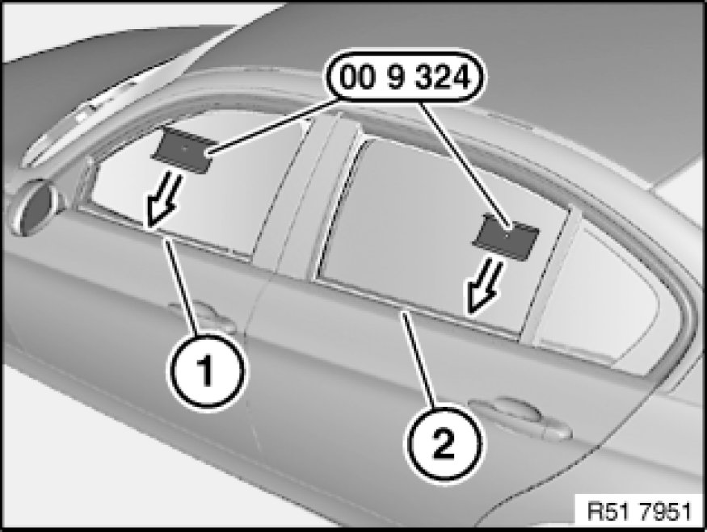
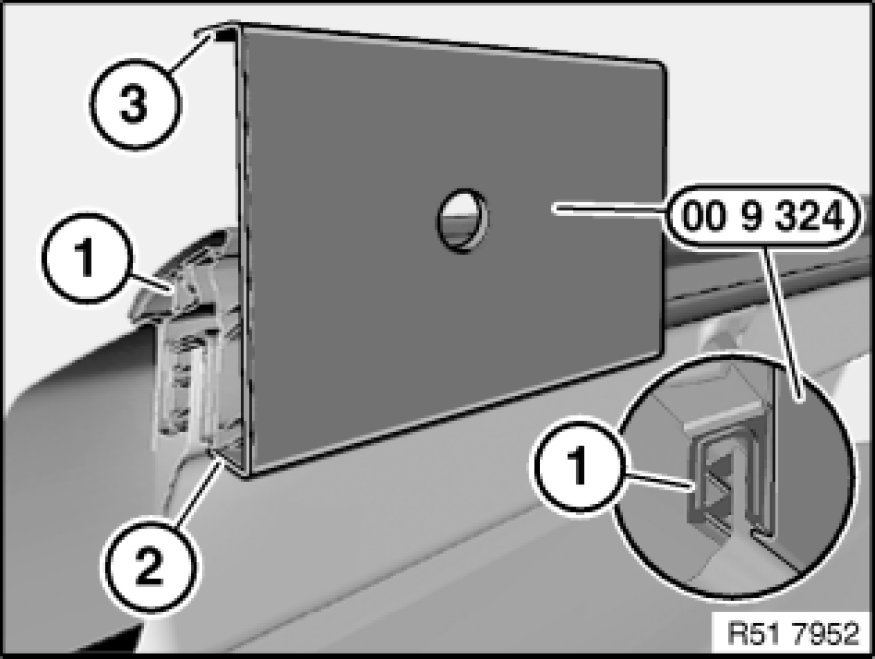
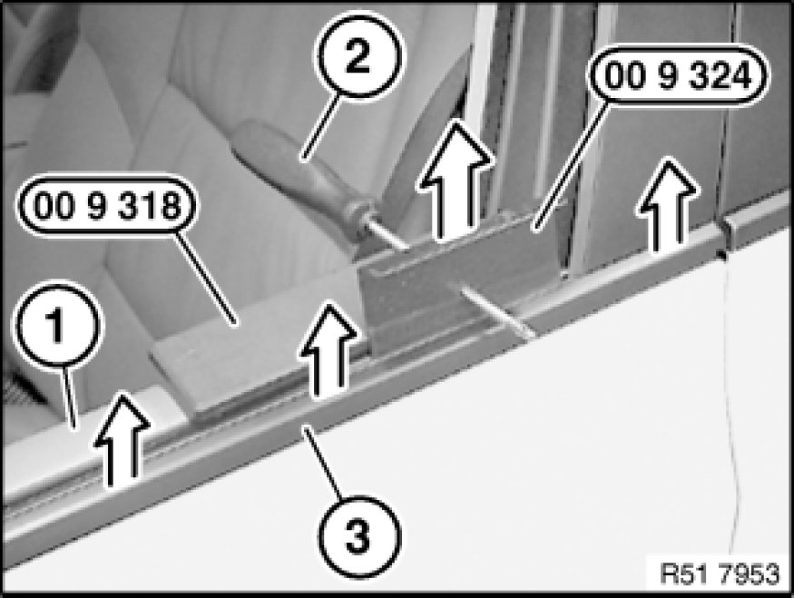

51 21 ... Removing Window Cavity Cover Strip With Special Tool 00 9 324 at Front or Rear
51 21 ... - Removing window cavity cover strip with special tool 00 9 324 at front or rear

Special tools required:

Open complete door window glass.
Front door:
Insert special tool 00 9 324 at front (at A-pillar) in window cavity (1) (letters TOP pointing upwards).
Rear door:
Insert special tool 00 9 324 at rear (at C-pillar) in window cavity (2) (letters TOP pointing upwards).

Note:
For purposes of clarity, picture shows inner door panel and door window glass removed.
Special tool 00 9 324 must be correctly guided under window cavity cover strip (1).
2 - Short leg, bottom
3 - Long leg, top (TOP)

Note:
Start at the front or rear, depending on the model.
Important!
Risk of damage!
Raise window cavity cover strip (3) no more than 5 mm in each levering operation, otherwise the strip will be bent.
Position special tool 00 9 318 on door trim panel (1).
Slide screwdriver (2) into special tool 00 9 324 and lever window cavity cover strip (3) upwards no more than 5 mm.
Guide special tools 00 9 324 and 00 9 318 towards front/rear and lever out window cavity cover strip (3) in the process.